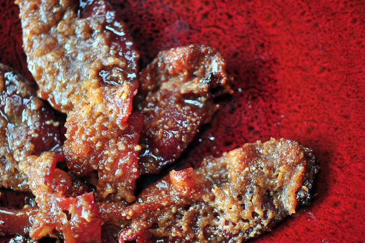
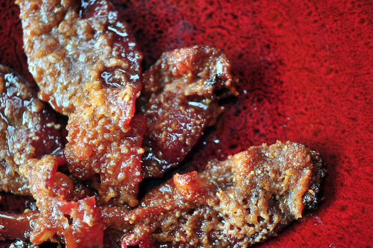

Appetizers to Please Everyone
This page addresses how to PHX the best appetizers you can with what you may already have in your house. Check it out and enjoy! You will impress all of your friends when you make these for your next party!


This page addresses how to PHX the best appetizers you can with what you may already have in your house. Check it out and enjoy! You will impress all of your friends when you make these for your next party!
 | Number | Measurement | Ingredient |
|---|---|---|
| 1 | 1 lb. | Bacon | 2 | ½ cup | Chopped Pecans | 3 | 3 Tbsps. | Maple Syrup | 4 | 3 Tbsps. | Butter | 5 | ½ cup | Packed Brown Sugar | 6 | 2 Tbsps. | White Sugar |
| Step | Directions |
|---|---|
| 1 | Preheat oven to 350°F (135°C). Line a baking sheet with parchment paper. | 2 | Place the bacon in a large, deep skillet, and cook over medium-high heat, turning occasionally, until evenly browned, about 10 minutes. Drain the bacon slices on paper towels. | 3 | Spread the pecans onto an unlined baking sheet, and toast 7 to 10 minutes in the preheated oven, until golden brown and aromatic. Watch the nuts carefully as they bake, because they burn quickly. Set aside to cool. | 4 | Stir the maple syrup, butter, brown sugar, and white sugar together in a large skillet over medium-high heat and cook, stirring constantly, until the hot candy resembles foamy caramel and a candy thermometer reads 270°F (130°C) (soft crack stage). Quickly stir in the pecans. | 5 | Toss the bacon in the candy mixture to coat each strip, and remove with tongs to cool and harden on the prepared baking sheet. Last but not least… eat up! |